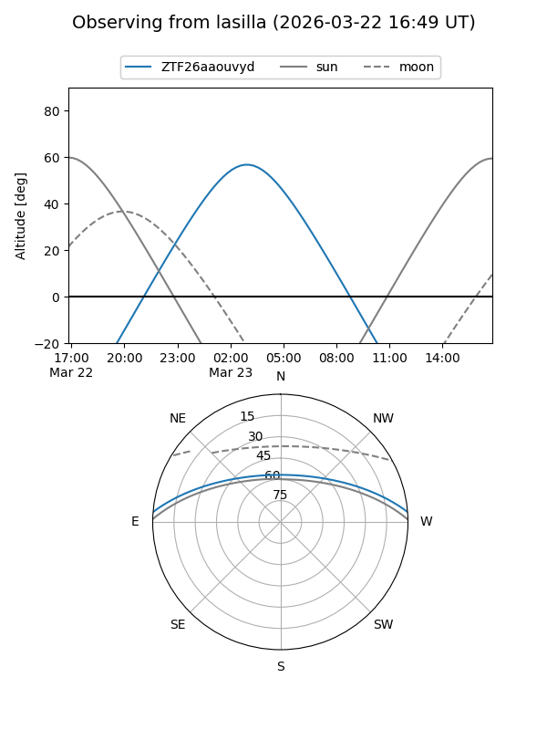
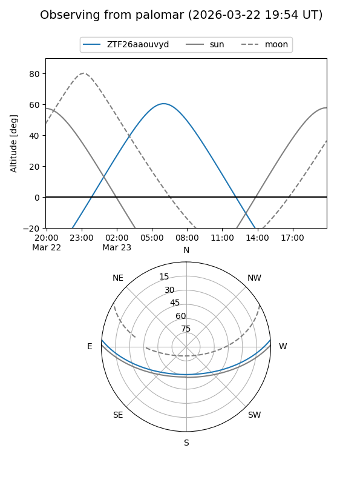

ZTF26aaouvyd
Target ZTF26aaouvyd at 2026-03-23 07:53
Aliases and brokers:
FINK: link
Lasair: link
ALeRCE: link
alt names
ZTF26aaouvyd (ztf,fink_ztf)
Coordinates:
equatorial (ra, dec) = 153.5675,+4.04452
equatorial (HMS+DMS) = 10:14:16.21,+04:02:40.26
galactic (l, b) = (237.5346,+45.99124)
Flags:
Photometry:
last ztfg=17.62
1 ztfg detections
Lightcurve
Visibility


Additional plots